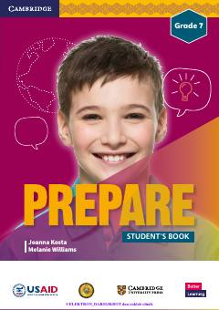

7I7-sinf o'quvchilari uchun mo'ljallangan rasmiy ingliz tili darsligi.
Ushbu darslik O'zbekiston Respublikasi Xalq ta'limi vazirligi va USAID hamkorligida tayyorlangan bo'lib, 7-sinf o'quvchilari uchun ingliz tilini o'rganishga mo'ljallangan. Kitobda turli mavzular, grammatik qoidalar, lug'atlar va qiziqarli mashqlar o'rin olgan.